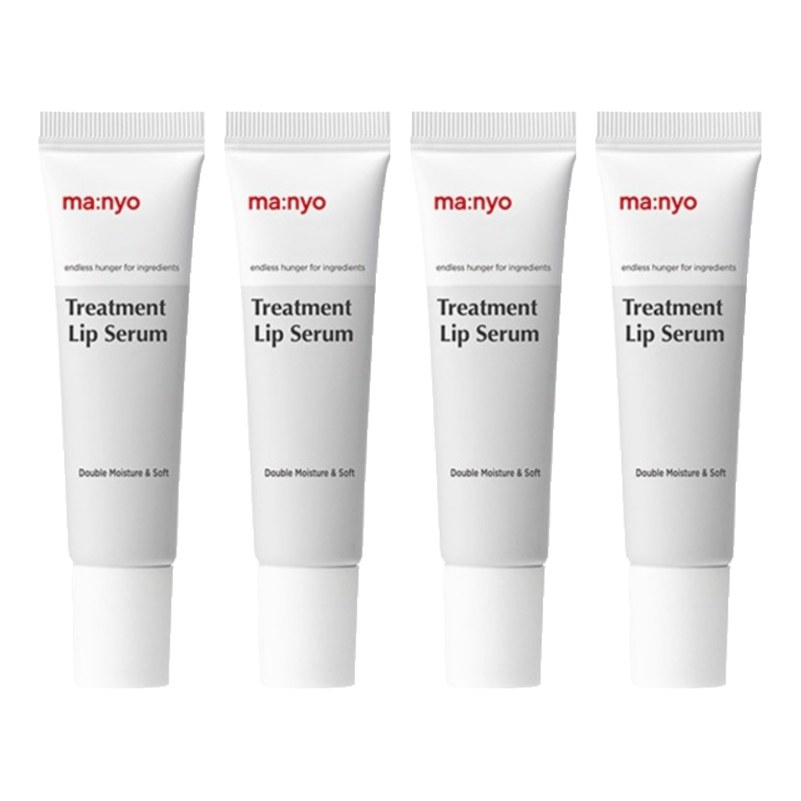
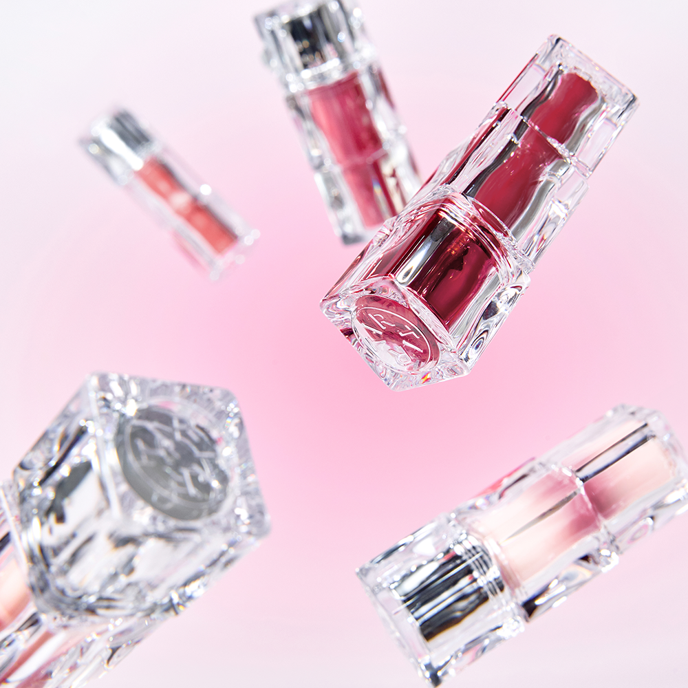
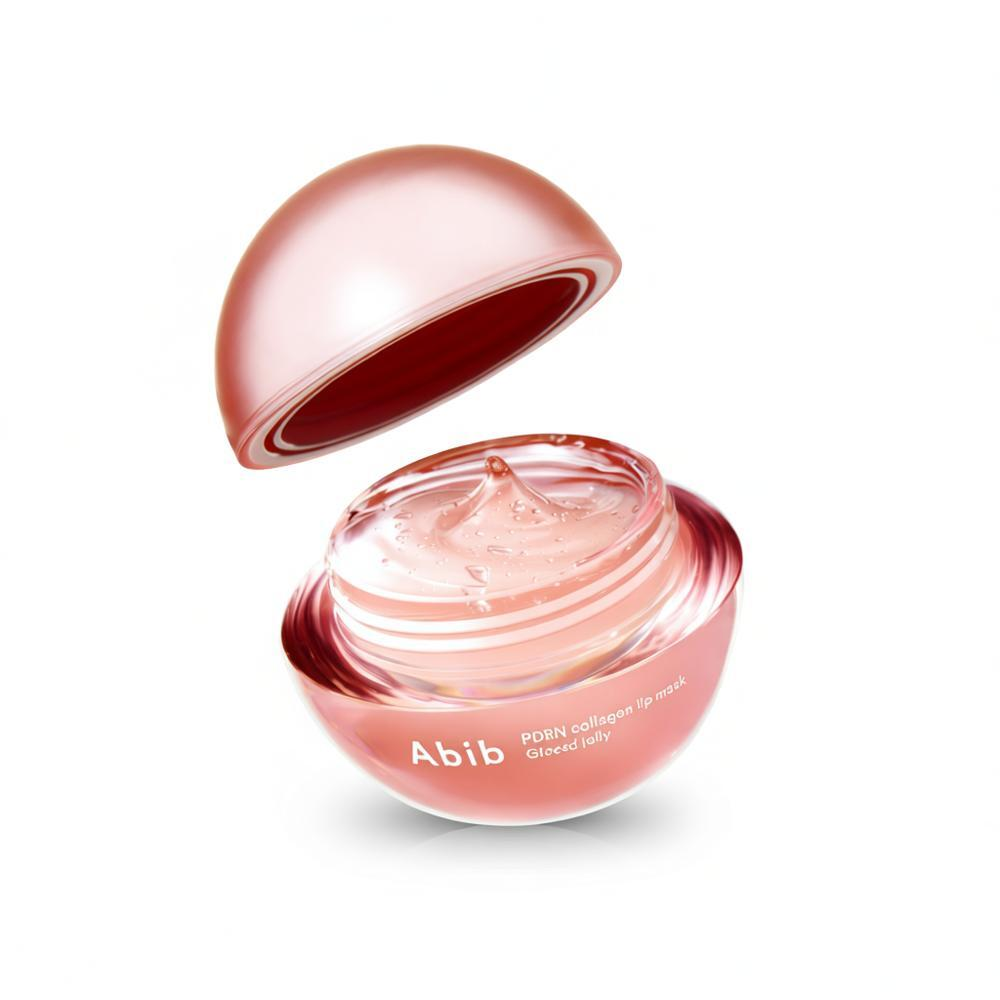
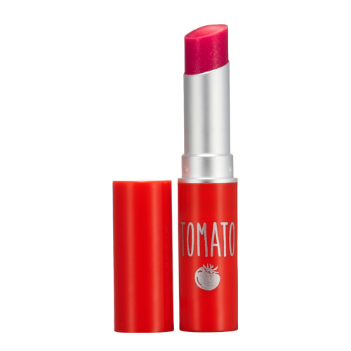
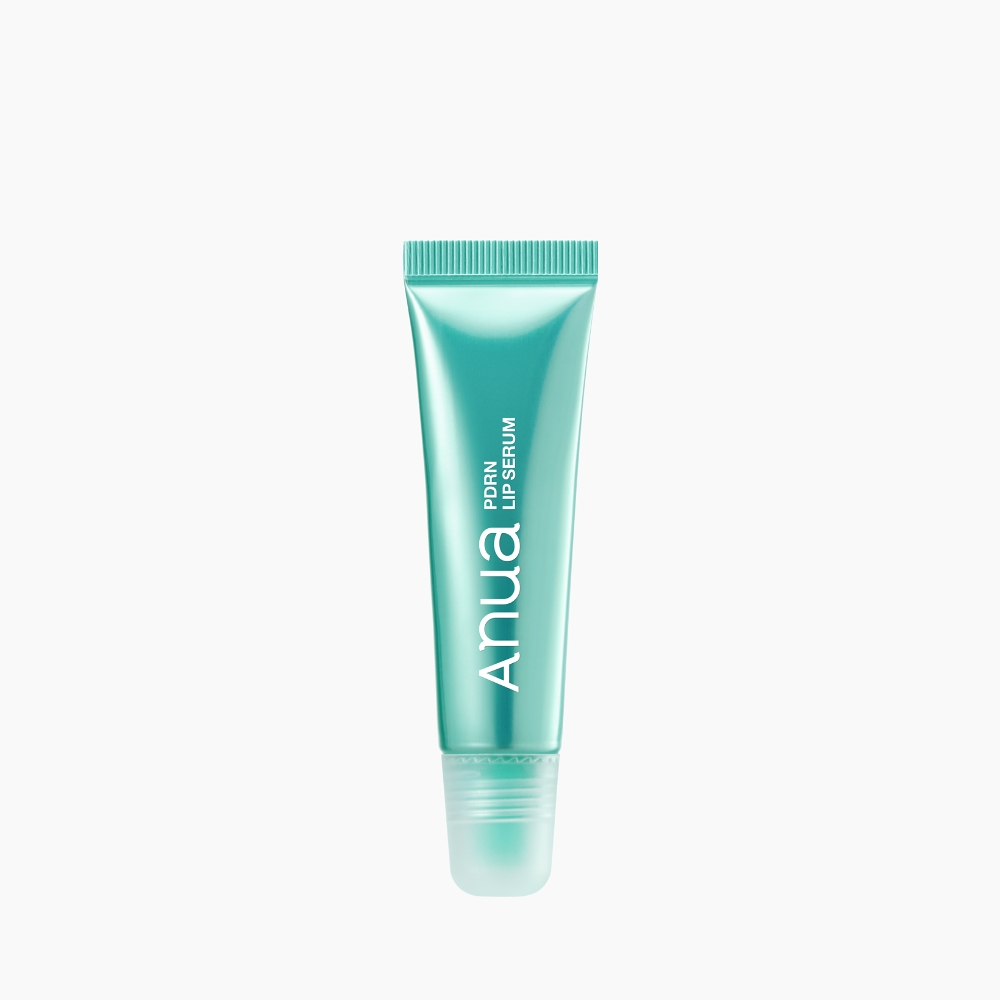

Home › Korean Lip Tint
6 Best Korean Lip Tints for Glass Skin (2026)
Korean skincare worth the hype
I rounded up 6 Korean lip tint worth knowing — the ones K-beauty fans keep coming back to. Real products, honest notes, and roughly what they cost. Prices are approximate; check the retailer for today's price.

Dokdo Travel Kit
Love the all-in-one travel convenience
≈ $17.3 (approx) · Ships worldwide
Check price on Amazon →
Treatment Lip Serum
Great for dry, chapped lips
≈ $19.7 (approx) · Ships worldwide
Check price on Amazon →
Waterism Glow Mini Tint
Perfect for a natural wash of color
≈ $5.5 (approx) · Ships worldwide
Check price on Amazon →
PDRN Collagen Lip Mask
Hydrates and plumps my lips nicely
≈ $16.4 (approx) · Ships worldwide
Check price on Amazon →
Tomato Jelly Tint Lip
Love the juicy, sheer finish
≈ $3.5 (approx) · Ships worldwide
Check price on Amazon →
PDRN Hyaluronic Lip Serum
Soothes and moisturizes my lips
≈ $5.0 (approx) · Ships worldwide
Check price on Amazon →Save for later
Prices are approximate and pulled from public shopping data; always check the retailer for the current price and shade/size before buying.